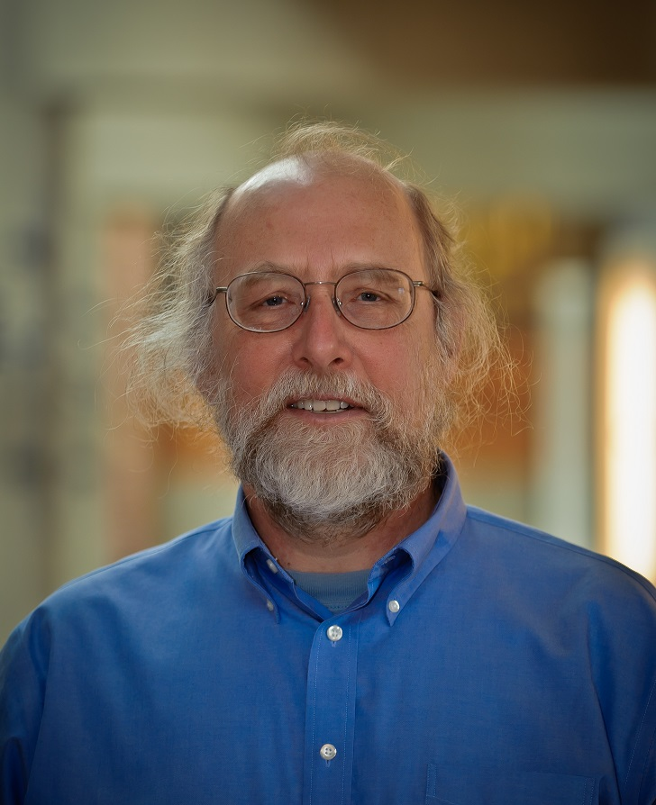

The ACM LIMITS workshop aims to foster discussion on the impact of present and future ecological, material, energetic, and societal limits on computing. These topics are seldom discussed in contemporary computing research. A key aim of the workshop is to promote innovative, concrete research, potentially of an interdisciplinary nature, that focuses on technologies, critiques, techniques, and contexts for computing within fundamental economic and ecological limits. A longer-term goal is to build a community around relevant topics and research. We hope to impact society through the design and development of computing systems in the abundant present for use in a future of limits. This year we are colocating for the first time with ICT4S.
Oliver Bates, Lancaster University, o.bates@lancaster.ac.uk
Eli Blevis, Indiana University, eblevis@indiana.edu
Jay Chen, New York University - Abu Dhabi, jchen@cs.nyu.edu (co-chair)
Steve Easterbrook, University of Toronto, sme@cs.toronto.edu
Elina Eriksson, KTH Royal Institute of Technology, elina@kth.se
Kurtis Heimerl, University of Washington, kheimerl@cs.washington.edu
Lara Houston, Goldsmiths, University of London, l.houston@gold.ac.uk
Ann Light, University of Sussex, ann.light@sussex.ac.uk
Bonnie Nardi, University of California - Irvine, nardi@ics.uci.edu (co-chair)
Lisa Nathan, University of British Columbia, lisa.nathan@ubc.ca
Teresa Cerratto Pargman, Stockholm University, tessy@dsv.su.se
Daniel Pargman, KTH Royal Institute of Technology, pargman@kth.se
Don Patterson, Westmont College, dpatterson@westmont.edu
Birgit Penzenstadler, California State University - Long Beach, bpenzens@gmail.com
Barath Raghavan, ICSI, barath@icsi.berkeley.edu
Christian Remy, University of Zurich, remy@ifi.uzh.ch
Debra Richardson, University of California - Irvine, djr@ics.uci.edu
Nithya Sambasivan, Google, nithyas@gmail.com
Douglas Schuler, Evergreen State College, douglas@publicsphereproject.org
Bill Tomlinson, Victoria University of Wellington, bill.tomlinson@vuw.ac.nz
Bonnie Nardi, UC Irvine
Barath Raghavan, ICSI
Michael Goldweber (ACM SIGCAS chair), Xavier
The submission site is now open for submissions; see below for details.
LIMITS aims to foster research on the impact of present or future ecological, material, energetic, and/or societal limits on computing and computing research to respond to such limits. The medium-term aim of the workshop is to foster concrete research, potentially of an interdisciplinary nature, that innovates on technologies, techniques, and contexts for computing within fundamental limits. A longer-term goal is to build a community around relevant topics and research. A goal of this community is to impact society through the design and development of computing systems in the abundant present for use in a future of limits and/or scarcity.
We envision two broad categories of papers: "discussion papers" and "systems papers" (see below). Submissions do not need to strictly fit into either category. All papers should succinctly frame the limits that are of interest to the author(s).
Discussion papers explore the nature of limits and computing. Good discussion contributions will detail the nature of the limits of interest, describe their impact on computing, and present directions for future research. Relevant topics include, but are not limited to:
Systems papers describe the design, implementation, and evaluation of computing systems that work within or help cope with limits. Also of interest are evaluations of systems that fail due to limits. Good systems contributions will address problems that meet present or future societal needs, describe clear limits and operational boundaries, and provide a detailed evaluation of the system in question. Relevant topics include, but are not limited to:
Abstract registration deadline: Feb 2, 2018, 11:59pm Pacific Time
Paper submission deadline: Feb 9, 2018, 11:59pm Pacific Time
Paper reviews available: March 7, 2018
Submit papers at this site. (If you have any issues with the submission site, please email jay.chen@nyu.edu.)
Papers must be registered, with a title and abstract, by Feb 2, 2018 at 11:59pm Pacific Time. Papers must be submitted in PDF format by Feb 9, 2018, 11:59pm Pacific Time.
Papers should adhere to the following guidelines:
Reviewing will be non-blind; authors should include their names and contact information.
Keynote Speaker: Alan Borning - University of Washington
 Alan Borning is Professor Emeritus in the Department of Computer Science & Engineering at the University of Washington (although retirement has not yet been entirely successful). His research interests have been in human-computer interaction, value sensitive design, and in object-oriented and constraint programming languages. In addition to work on SEED, some example projects include the UrbanSim urban simulation system; OneBusAway, a set of tools that provide real-time transit information; the Living Voters Guide, an experiment in social media and civic engagement; and a series of constraint-based programming languages and systems. He received a BA from Reed College in 1971, and a PhD in computer science from Stanford University in 1979, co-advised by Alan Kay and Terry Winograd. Awards include a Fulbright Senior Scholar Award for lecturing and research in Australia, and being named a Fellow of the Association for Computing Machinery in 2001.
Papers: TBD
Travel details TBD.
There will be a registration fee of $150 non-students and $50 for students, with a $35 discount for members of ACM SIGCAS.
We have some (limited) funds to offset some/all of the travel expenses for students and other attendees. If you would like to be considered for a travel grant, please email Bonnie Nardi (nardi@uci.edu) by March 30, with a brief summary of your likely travel expenses, and a brief statement of need ("I am a graduate student without external funding", etc.). We will notify all applicants of the outcome shortly thereafter.